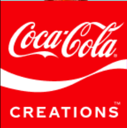

Rule of thirds
A rule of thumb for composing visual images in which either
the first or last third of the image contains the subject, thus
leaving the other two-thirds free and more open.
Mediaboom
In the image rule of thirds is seen in the left side of the
image with the woman who serves as the subject taking up the
first third on that side, and the rest being given empty space
that makes the image feel more empty and less crowded.
White space and clean design
White space is the empty unused part of a design, while
clean design is the term for precise and uncluttered images that
are created from the careful placement of elements with these images.

VPNpro
This design makes use of white space and clean design to draw
greater focus to the text and centered images, which helps to
further draw the viewers attention and intrigue in the product
being advertised.
PARC: contrast
Artistic appeal created from the arrangement of two differing
elements, such as opposite colors or font styles.

Coca Cola
The Coca Cola design above shows contrast through the difference
in coloring of the red and white in this image, which not only makes
it more appealing by adding a greater variety of colors to the image
but also helps to draw in customers through the use of the white text
on a red background.